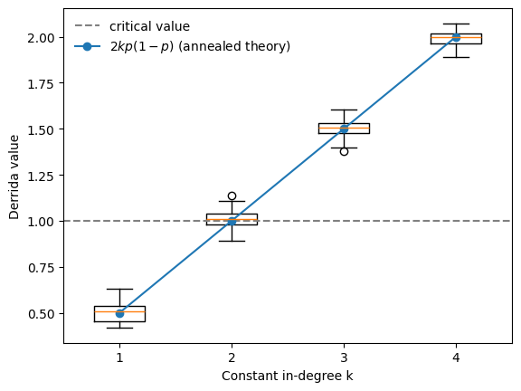

Preface
BoolForge is a Python toolbox for generating, analyzing, and simulating Boolean functions and Boolean networks. Boolean network models are widely used in systems biology, theoretical biology, and complex systems research to study regulatory systems whose components operate in two qualitative states (e.g., active/inactive or ON/OFF).
In gene regulatory network models, for instance, each node represents a molecular component (such as a gene, protein, or signaling molecule), and each node is updated by a Boolean function that represents the regulatory logic controlling that component.
The tutorials in this document provide a structured introduction to BoolForge and demonstrate how it can be used to perform computational experiments on Boolean functions and Boolean networks.
Philosophy and scope of BoolForge
BoolForge was designed to support both methodological research on Boolean networks and applied analysis of biological regulatory models.
Three principles guide its design:
1. Fundamental representations
Boolean functions are stored internally as truth tables, the most fundamental representation of Boolean logic. Logical expressions and polynomial forms can be derived from this representation when needed.
2. Controlled random model generation
Many research questions require comparing biological networks with suitable null models. BoolForge therefore provides various tools for generating random Boolean functions and Boolean networks with prescribed structural properties.
3. Integration of structure and dynamics
Structural properties of regulatory rules (such as canalization, redundancy, and symmetry) influence dynamical behavior, including attractors, robustness, and sensitivity to perturbations. BoolForge enables analysis across these levels, connecting function-level structure to network-level dynamics.
Together, these capabilities enable ensemble-based exploration of the relationship between structure and dynamics in Boolean networks.
For example, we can reproduce, in a few lines of code, the classical phase transition from order to chaos in random Boolean networks predicted by the annealed approximation of Derrida and Pomeau (1986).
[1]:
import boolforge as bf
import matplotlib.pyplot as plt
N = 100 # network size
ks = range(1,5) # constant in-degree
n_networks = 50 # ensemble size
p = 0.5 # bias p: probability of ones in truth table
derrida_values = []
for k in ks:
derrida_values.append([])
for _ in range(n_networks):
bn = bf.random_network(N, k, bias = p, allow_degenerate_functions=True)
derrida_values[-1].append( bn.get_derrida_value(exact=True) )
plt.boxplot(derrida_values, positions=list(ks))
plt.axhline(1, linestyle="--", color="gray", label="critical value")
plt.plot(ks, [2*k*p*(1-p) for k in ks], "o-", label=r"$2kp(1-p)$ (annealed theory)")
plt.xlabel("Constant in-degree k")
plt.ylabel("Derrida value")
plt.legend(frameon=False);

The Derrida value measures the average number of nodes affected by a single-bit random perturbation after one synchronous update of the network.
Structure of the tutorials
The tutorials gradually introduce the main concepts and tools provided by BoolForge, moving from individual Boolean functions to full Boolean network models and their dynamical analysis.
Boolean functions: representation and structural analysis
Canalization: redundancy and robustness of regulatory rules
Random function generation: sampling functions with prescribed properties
Boolean networks: construction and wiring diagrams
Network dynamics: attractors and state transition graphs
Stability and robustness: sensitivity to perturbations
Random network ensembles: statistical analysis of network dynamics
Biological models: analysis of curated regulatory networks
Each tutorial contains executable code examples illustrating how these ideas can be explored using BoolForge. Readers are encouraged to run the code cells and modify the examples to explore their own Boolean functions and networks.